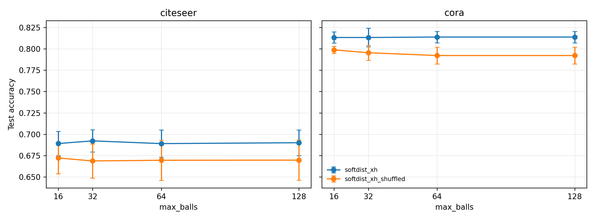
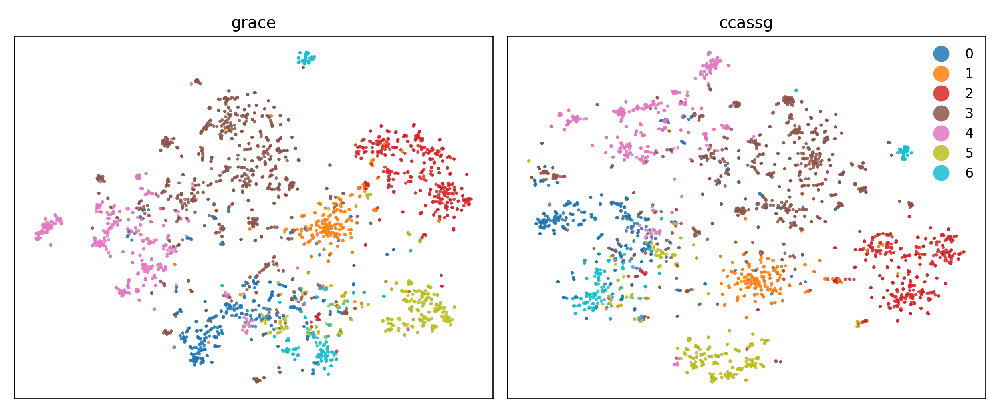
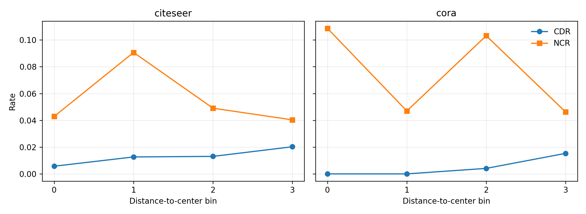
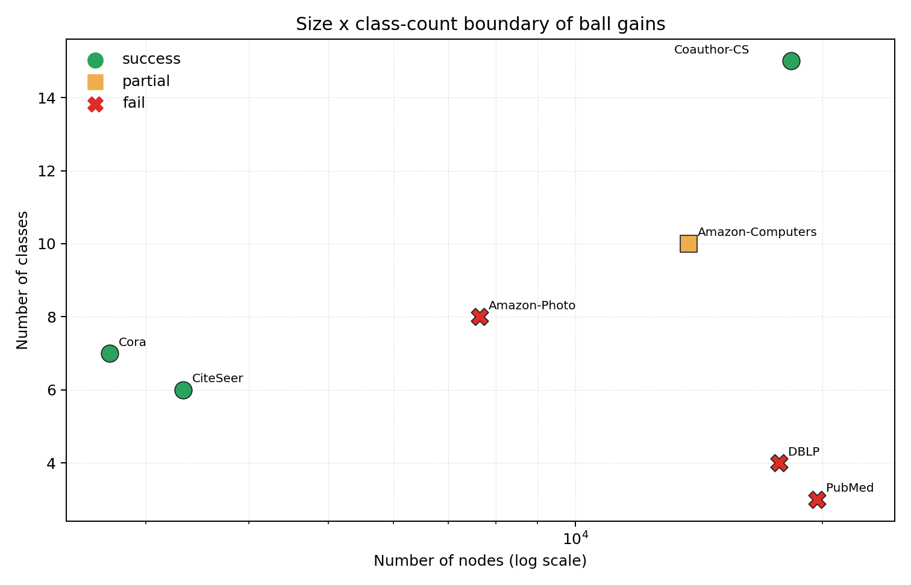

图节点分类在训练标签含噪时容易受到错误监督的影响。现有图噪声标签方法（如 NRGNN、RTGNN）多采用迭代式机制——在线伪标签、动态加边、图结构重估——通常带来额外计算和超参耦合。我们提出 SoftDist [X‖H]，一个非迭代、单遍预处理的框架：(1) 用标签无关（label-free）的图对比学习（GRACE）预训练得到冻结表示 H；(2) 在 H 空间用几何分裂构造粒球，作为局部语义单元；(3) 每个粒球内仅统计训练节点的噪声标签分布，经多类别校准的置信度 α 生成软标签目标；(4) 一个全新的 GCN 以 [X‖H] 拼接特征和软目标训练。该设计把标签噪声处理拆成两个相对独立的部分：H 由无标签目标学习得到，粒球只在下游阶段读取 train noisy labels。在修正后的 train-only 噪声协议下，SoftDist [X‖H] 相对 GCN [X‖H] 在 Cora/CiteSeer/Coauthor-CS 上分别取得 +0.72/+1.06/+0.25pp 的配对增量，相对随机球取得 +1.13/+1.62/+0.43pp 的配对增量。与强迭代基线相比，SoftDist 在 Cora 上接近 NRGNN [X‖H]（−0.05pp），但在 CiteSeer 和 Coauthor-CS 上落后；因此本文不主张全面 SOTA，而主张一种更简单、非迭代、可解释且具有明确适用边界的替代方案。我们进一步报告负结果和适用域诊断，显示粒球信号能否转化为下游增益取决于 ball-clusterability、图 regime 与强基线吸收能力的共同作用。
问题。图半监督节点分类依赖少量标注节点。当这些标注被噪声污染（标注错误、众包噪声、自动标注），GNN 会在训练后期记忆噪声标签，导致泛化下降。在修正后的 train-only 噪声协议下（20%/10%/70% split，仅污染 train，uniform noise=0.4），朴素 GCN+CE 在 Cora、CiteSeer 和 Coauthor-CS 上分别为 78.97%、64.53% 和 92.06%。
现有方法的共性与代价。主流图噪声标签方法是迭代耦合的：NRGNN 在线预测伪标签并向图中加边连接可靠节点；RTGNN 联合估计标签与图结构鲁棒训练。这类方法在多个数据集上仍是强基线，但 (i) 训练中需要维护额外的伪标签或图结构状态；(ii) 方法效果往往与早停、阈值和伪标签选择策略耦合；(iii) 伪标签在图上传播时可能放大局部错误（已有理论分析支持，见 Deep Insights into Noisy Pseudo Labeling, NeurIPS 2023）。
核心观察：把一部分噪声处理负担前移到无标签表示阶段。图对比学习（GRACE 等）的预训练目标完全不使用标签。因此其表示 H 不直接暴露于训练标签噪声，同一份冻结 H 可以在不同噪声设置下复用。与迭代式方法相比，这种拆分减少了伪标签和图结构更新对噪声标签的反馈依赖。消融结果显示，H 对 Cora/CiteSeer 的纯 CE 分类器有明确帮助，但在 Coauthor-CS 上几乎不带来额外提升；因此本文把 H 写作有用但非充分的表示先验，而不是噪声问题的完整解法。
本文方法。我们不去微调或在线更新表示，而是冻结 H，把它用作两件事：(a) 构造粒球以提供局部语义邻域，(b) 作为分类器的附加输入特征。粒球只读取训练节点的噪声标签来生成软目标分布，校正强度由球内投票置信度连续调制。整条管线是单遍、非迭代的。
H 这一共同变量后，粒球软目标相对「同样用 H 的纯 CE 分类器」取得 +0.72/+1.06/+0.25pp（Cora/CiteSeer/Coauthor-CS）的配对增量，相对「同样用 H 的随机球」取得 +1.13/+1.62/+0.43pp 的配对增量。与强迭代方法 NRGNN 相比，本文在 Cora 上接近 NRGNN [X‖H]（−0.05pp），在 CiteSeer 和 Coauthor-CS 上不及 NRGNN [X‖H]；因此本文不声称全面超越 SOTA，而以更简单、非迭代、可解释的方式提供竞争性但有边界的替代方案。H 几何是否对齐更接近关键调节变量。设节点 i 属于粒球 B，T_B = B ∩ train 为球内训练节点集合。统计噪声标签计数 c_B，多数票占比 margin_B = max(c_B)/|T_B|。多类别校准的置信度为：
其中 C 为类别数，1/C 是随机多数票的期望基线。软目标为原噪声 one-hot 与球内分布的凸组合：
分类器以软交叉熵 −Σ soft_target·log softmax(z) 在 train 节点上训练。
1/C 校准——若用二分类零点 0.5，多类别下 margin 普遍落在 0.3–0.5，α≈0，校正失效（我们的消融显示）。(2) 用完整分布 dist_B 而非 one-hot 多数票，保留不确定性，避免硬校正的高误伤。(3) 软组合而非硬替换——这是控制 CDR（干净标签误伤率）的关键。H 在管线中扮演双重角色：除提供球的几何外，将其 L2 归一化后与原始特征 X 拼接作为分类器输入。这一步把 label-free 对比表示的判别力直接注入分类器。最新 train-only 消融显示，H 对纯 CE 分类器在 Cora/CiteSeer 上分别带来 +1.73/+2.96pp，但在 Coauthor-CS 上几乎为 0；在此基础上，真实粒球软目标相对 GCN [X‖H] 仍提供 +0.72/+1.06/+0.25pp 的配对增量。
| 方法 | 类型 | Cora | CiteSeer | Coauthor-CS |
|---|---|---|---|---|
| GCN + CE | 无去噪 | 0.7897 ± 0.0163 | 0.6453 ± 0.0154 | 0.9206 ± 0.0034 |
| GCN [X‖H] | H 特征公平性对照 | 0.8070 ± 0.0154 | 0.6748 ± 0.0139 | 0.9205 ± 0.0019 |
| NRGNN | 迭代加边伪标签 | 0.8176 ± 0.0128 | 0.7103 ± 0.0101 | 0.9356 ± 0.0011 |
| NRGNN [X‖H] | NRGNN 同样使用 H | 0.8147 ± 0.0128 | 0.7074 ± 0.0104 | 0.9372 ± 0.0018 |
| SoftDist [X‖H] shuffled | 随机球结构对照 | 0.8028 ± 0.0232 | 0.6692 ± 0.0120 | 0.9187 ± 0.0023 |
| SoftDist [X‖H]（本文） | 非迭代软校正 | 0.8141 ± 0.0189 | 0.6854 ± 0.0099 | 0.9230 ± 0.0014 |
| TFR (CIKM 2025) | 官方实现，seed0 validation 调参 | 0.7784 ± 0.0073 | 0.7005 ± 0.0064 | 0.9064 ± 0.0056 |
| ProCon (IJCAI 2025) | paper reimplementation | 0.7612 ± 0.0166 | 0.6241 ± 0.0346 | 0.8542 ± 0.0721 |
| GD² (NeurIPS 2025) | paper reimplementation | 0.7780 ± 0.0216 | 0.6296 ± 0.0216 | 0.9204 ± 0.0024 |
| UnionNET | 节点级 support 校正 | 0.7928 ± 0.0131 | 0.6794 ± 0.0257 | — |
| CRGNN | 对比鲁棒 | 0.7661 ± 0.0170 | 0.6386 ± 0.0114 | — |
| CGNN | 对比+同质选择 | 0.7604 ± 0.0548 | 0.5943 ± 0.0364 | — |
| TSS | 拓扑采样选择 | 0.6023 ± 0.0256 | OOM / incomplete | — |
| R2LP | 标签传播（train-only 修正） | 0.6095 ± 0.0340 | 0.3431 ± 0.0532 | — |
可写入论文的论述：在修正协议下，SoftDist [X‖H] 的主要证据不是全面超过强迭代基线，而是相对同输入的 GCN [X‖H] 与 shuffled 结构对照均有受控增量。SoftDist 在 Cora 上接近 NRGNN [X‖H]（81.41% vs 81.47%），但在 CiteSeer 和 Coauthor-CS 上低于 NRGNN [X‖H]。与 2025 方法相比，SoftDist 高于 TFR 的 Cora/Coauthor-CS 和 ProCon/GD² 的三个数据集，但 CiteSeer 上 TFR 仍更强。Coauthor-CS 的价值应写成“真实球结构在大图多类别设置下仍优于随机球和 GCN [X‖H]”，而不是写成超过最强 baseline。
latest_baselines_trainonly_20260622_continuation/summary.csv
| 方法 / seed | 0 | 1 | 2 | 3 | 4 |
|---|---|---|---|---|---|
| Cora SoftDist [X‖H] | 0.8211 | 0.7968 | 0.8201 | 0.8391 | 0.7937 |
| Cora NRGNN [X‖H] | 0.8285 | 0.8011 | 0.8021 | 0.8253 | 0.8164 |
| CiteSeer SoftDist [X‖H] | 0.6877 | 0.6847 | 0.6731 | 0.7002 | 0.6813 |
| CiteSeer NRGNN [X‖H] | 0.7195 | 0.6954 | 0.7045 | 0.7006 | 0.7169 |
| Coauthor-CS SoftDist [X‖H] | 0.9208 | 0.9239 | 0.9232 | 0.9246 | 0.9228 |
| Coauthor-CS NRGNN [X‖H] | 0.9380 | 0.9362 | 0.9354 | 0.9366 | 0.9399 |
| 配置 | Cora | CiteSeer | Coauthor-CS | 说明 |
|---|---|---|---|---|
| GCN + CE（无 H 无球） | 0.7897 | 0.6453 | 0.9206 | 基线 |
| GCN + CE [X‖H]（H，无球） | 0.8070 | 0.6748 | 0.9205 | 仅 H 拼接 |
| SoftDist [X‖H] shuffled（H + 随机球） | 0.8028 | 0.6692 | 0.9187 | 结构对照 |
| SoftDist [X‖H]（完整） | 0.8141 | 0.6854 | 0.9230 | H + 真实球 |
| 配对 delta | Cora | CiteSeer | Coauthor-CS |
|---|---|---|---|
| H 贡献 (gcn_xh_ce − GCN+CE) | +1.73pp, 5/5 | +2.96pp, 5/5 | -0.00pp, 2/5 |
| 球贡献 (softdist_xh − gcn_xh_ce) | +0.72pp, 5/5 | +1.06pp, 4/5 | +0.25pp, 5/5 |
| 真实-随机球 (softdist_xh − shuffled) | +1.13pp, 4/5 | +1.62pp, 5/5 | +0.43pp, 5/5 |
可写入论文的论述：球贡献与真实-随机球对照在三个数据集上均为正，其中 Coauthor-CS 双 5/5 说明真实球结构的受控增量不局限于小图。H 贡献在 Coauthor-CS 上几乎为零，说明该数据集的核心证据不是“拼接 H 提升分类器”，而是“真实球结构相对随机球和 GCN [X‖H] 仍有额外增量”。
| 方法 | 用 H? | 用球? | Cora | CiteSeer | Coauthor-CS |
|---|---|---|---|---|---|
| NRGNN | 否 | 否 | 0.8176 ± 0.0128 | 0.7103 ± 0.0101 | 0.9356 ± 0.0011 |
| NRGNN [X‖H] | 是 | 否 | 0.8147 ± 0.0128 | 0.7074 ± 0.0104 | 0.9372 ± 0.0018 |
| GCN + CE [X‖H] | 是 | 否 | 0.8070 ± 0.0154 | 0.6748 ± 0.0139 | 0.9205 ± 0.0019 |
| SoftDist [X‖H] | 是 | 是 | 0.8141 ± 0.0189 | 0.6854 ± 0.0099 | 0.9230 ± 0.0014 |
| 配对 delta | Cora | CiteSeer | Coauthor-CS |
|---|---|---|---|
| NRGNN [X‖H] − NRGNN | -0.30pp, 2/5 | -0.29pp, 2/5 | +0.16pp, 4/5 |
| SoftDist [X‖H] − NRGNN [X‖H] | -0.05pp, 2/5 | -2.20pp, 0/5 | -1.42pp, 0/5 |
可写入论文的论述（降级后）：公平性对照显示，冻结表示 H 不是 SoftDist 独占资产；它对 NRGNN 的影响在不同数据集上并不一致。SoftDist 在 Cora 上接近 NRGNN [X‖H]，但 CiteSeer 与 Coauthor-CS 上 NRGNN [X‖H] 明显更强。本文不能把「球校正全面优于强 baseline」作为 claim。更稳妥的 claim 是：粒球软校正在 GCN [X‖H] 分类器上提供受控额外增量；与 NRGNN 相比，本文以更简单、非迭代、可解释的方式取得竞争性但非全面最优的结果。
| max_balls | Cora real | Cora shuffled | CiteSeer real | CiteSeer shuffled |
|---|---|---|---|---|
| 16 | 0.8132 ± 0.0065 | 0.7987 ± 0.0042 | 0.6892 ± 0.0142 | 0.6723 ± 0.0184 |
| 32 | 0.8132 ± 0.0109 | 0.7954 ± 0.0087 | 0.6923 ± 0.0129 | 0.6688 ± 0.0200 |
| 64（默认） | 0.8137 ± 0.0067 | 0.7921 ± 0.0097 | 0.6891 ± 0.0160 | 0.6696 ± 0.0234 |
| 128 | 0.8137 ± 0.0067 | 0.7921 ± 0.0097 | 0.6901 ± 0.0150 | 0.6698 ± 0.0235 |
可写入论文的论述：默认 max_balls=64 落在较平坦的平台区而非孤立最优点。Cora 在 16–128 间仅 0.05pp 波动，CiteSeer 仅 0.32pp 波动；真实球在所有设置下均超过 shuffled。由于 min_ball_size=32 固定，128 会在几何分裂条件下自然饱和到约 52/65 个实际球，这也说明不是靠无限细分取得收益。

| 噪声设置 | Cora | CiteSeer |
|---|---|---|
| uniform 0.2 | tie (+1.05pp) | loss (−0.81pp) |
| uniform 0.4 | tie (+0.31pp) | loss (−1.36pp) |
| uniform 0.6 | loss (−11.20pp) | loss (−7.12pp) |
| pair 0.2 | tie (−0.32pp) | loss (−3.56pp) |
| pair 0.4 | tie (+0.52pp) | loss (−4.23pp) |
| 噪声设置 | Cora | CiteSeer | Coauthor-CS |
|---|---|---|---|
| uniform 0.2 | −0.37pp (2/5) | +0.54pp (3/5) | +0.26pp (4/5) |
| uniform 0.4 | +1.10pp (4/5) | +1.30pp (5/5) | +0.53pp (5/5) |
| uniform 0.5 | +1.52pp (5/5) | +0.83pp (4/5) | — |
| uniform 0.6 | +0.66pp (2/5，real<shuffled) | +2.22pp (4/5) | +0.08pp (3/5) |
| pair 0.4 | +1.84pp (4/5) | +1.32pp (3/5) | +1.66pp (3/5) |
| instance 0.4 | +1.71pp (5/5) | +1.53pp (4/5) | +0.65pp (5/5) |
可写入论文的论述（钟形曲线，核心机理）：球增量随噪声率呈清晰的倒 U 钟形——Cora uniform 全谱 −0.37 → +1.10 → +1.52(0.5，峰值) → +0.66pp(0.6)。机理统一：方法本质是用球内集体共识覆盖个体标签，其价值取决于"集体共识 vs 个体标签谁更可信"。低噪声(0.2)个体标签已大多正确，覆盖反而是干扰（Cora 甚至负）；中高噪声(0.4-0.5)个体不可信、集体共识相对价值最大，达峰值；极高噪声(0.6)球内多数票本身被噪声系统性带翻，离线校正崩溃（Cora real<shuffled），此时 NRGNN 的在线机制更强。这是一个清晰、可解释、有峰值有崩溃点的适用条件。
pair 噪声的系统性弱势（写入 limitations + future work）：pair 噪声下球增量跨三数据集普遍弱于 uniform/instance（pair 0.2 处处不稳；pair 0.4 仅 Cora 保住）。机理：pair 把类 A 系统性翻成固定的 B，球内出现伪多数，集体投票被一致地带偏（uniform 的随机错误可被多数票平均掉，pair 的系统错误压不过）。future work：用 label-free 的 H 几何校验投票——H 对标签翻转免疫，被翻转节点在 H 空间仍靠近真类簇，可据此识别并降权伪多数。
noise_grid_ball_increment_trend_20260611.csv + noise_grid_regime_win_matrix_20260611.csv
| SSL 表示 | Cora clean probe | 下游球数 | 下游球 real−shuffled |
|---|---|---|---|
| GRACE（本文用） | 0.8294 | 52 | +0.0253 |
| CCA-SSG | 0.8566 | 1（塌缩） | +0.0000 |
| GraphMAE | 0.8396 | 1（塌缩） | +0.0000 |
| BGRL | 0.8007 | — | — |
| 表示 | Cora 球数 / purity | CiteSeer 球数 / purity | 判定 |
|---|---|---|---|
| GRACE anchor | 52.3 / 0.787 | 64.0 / 0.699 | 保留主线 anchor |
| GRACE + uniformity λ=0.1 | 1 / 0.302 | 1 / 0.211 | 不过门 |
| GRACE + uniformity λ=0.5 | 1 / 0.302 | 1 / 0.211 | 不过门 |
| GRACE + uniformity λ=1.0 | 1 / 0.302 | 1 / 0.211 | 不过门 |

runs/figures_20260615/tsne_class_distance_summary.csv。
| 表示 | 类内平均距离 | 类间平均距离 | 类间/类内比 |
|---|---|---|---|
| GRACE | 0.539 | 0.740 | 1.372 |
| CCA-SSG | 1.059 | 1.378 | 1.301 |
我们系统性地探索了在 SoftDist 之上的多类增强，但这些增强未能在预注册标准下超过基础软分布校正。这些负结果并非随意试错，而是预注册门槛 + 诊断先行的受控实验，共同刻画了该框架的能力边界。核心观察是：在低标签覆盖（20%）、高噪声（40%）下，球校正候选集内部「干净 vs 噪声」标签缺少可部署的清晰分界——我们在三类相互独立的信号维度上检查了这一点。
| 信号维度 | 实验 | 结果 | 失败机理 |
|---|---|---|---|
| 票数统计 | gated hard correction | 两数据集需相反松紧 | 不存在通用阈值 |
| 时间维度 | early-learning 裁决 (4a/4a-2) | 保护精度 ≤0.69 < 0.70 | 早期置信不可靠 |
| 尺度维度 | 多粒度一致性裁决 | 保护精度 0.52 < 0.70 | 跨尺度分歧≠干净边界 |
| 逐节点分辨率 | 相似度加权 / 距离调制 α | CDR 与 NCR 同步崩塌 | 球内仅 5–10 票，无分辨率 |

可写入论文的论述：Cora 的 CDR 从中心分桶的 0 上升到边缘分桶的 0.0153，CiteSeer 从 0.0057 上升到 0.0203。该趋势支持一个机制解释：硬性校正最容易误伤球边界附近的干净标签，因此 SoftDist 选择软分布而不是 hard replacement。
| 方向 | 判负原因 |
|---|---|
| 标签驱动自适应球粒度 (E1) | 20% 覆盖下票密度不足，纯度估计 std±0.15 |
| 球级无标签伪监督扩展 | 球内恒定 target 无逐节点分辨率，诊断 precision 0.87 仍训练判负 |
| 动态 α / 模型预测反馈 | 自强化 confirmation bias |
| ball consistency 正则 | 零增量 |
| 与 NRGNN 杂交 (BallAux) | 球信号与图传播冗余 |
| GRACE encoder 微调 | noisy CE 微调破坏冻结表示可分性 (0.80→0.57) |
| 方法 | PubMed | vs SoftDist |
|---|---|---|
| GCN + CE | 0.8392 ± 0.0057 | +0.72pp |
| SoftDist [X‖H] | 0.8320 ± 0.0078 | — |
| SoftDist [X‖H] shuffled | 0.8303 ± 0.0057 | −0.17pp |
| NRGNN | 0.8080 ± 0.0088 | −2.40pp |
可写入论文的论述（双面）：PubMed 上 SoftDist 超过 NRGNN 2.4pp，但不及朴素 GCN+CE（−0.72pp）。诊断显示球本身健康（64 球、加权纯度 0.81、NCR 0.79），失败原因是 PubMed 在该协议下 GCN+CE 基线本就极强（3 类、同质性高），软校正的 CDR 成本超过收益。值得注意 NRGNN 在 PubMed 也输给 GCN+CE 3.1pp——说明这是所有去噪方法在该 regime 的共同边界，而非本文独有缺陷。
| 方法 / 诊断 | DBLP | 判定 |
|---|---|---|
| num_balls | 1.0 ± 0.0 | 球塌缩，触发 no-go |
| true_all_purity_weighted | 0.4471 ± 0.0000 | 单球接近全局类分布 |
| soft_pseudo_cdr | 0.5545 ± 0.0082 | 全局分布会严重误伤干净标签 |
| GCN + CE seed0 | 0.8160 | 下载/loader smoke |
| GCN [X‖H] seed0 | 0.8300 | H 特征有用 |
| SoftDist [X‖H] seed0 | 0.8307 | 与 shuffled 相同 |
| SoftDist shuffled seed0 | 0.8307 | 真实球无独立贡献 |
| NRGNN [X‖H] seed0 | 0.8340 | 强基线更高 |
| Phase 32 scaled balls | 256 球 / purity 0.8377 | 构造参数可救 |
| Scaled SoftDist / GCN / shuffled seed0 | 0.8300 / 0.8300 / 0.8383 | 下游仍不过 shuffled |
可写入论文的论述：DBLP 不能作为第三个成功数据集。Phase 32 细化了最初判断：默认小图参数确实会让 DBLP 粒球塌缩为单球，但放宽 split_improvement 并增加 max_balls 后，几何上可以得到高纯度球。关键问题在下游：缩放参数后的 SoftDist 仍未超过 shuffled。这个负结果强化了更准确的机制边界：表示可用于分类，也可被几何划分，但球诱导的 noisy-label target 未必对更大图提供独立增量。因此 DBLP 应放入 limitations / boundary analysis，而不是主成功表。
| 数据集 | ball AUC | GCN AUC | ball AUC in GCN-clean50 | 判定 |
|---|---|---|---|---|
| Cora | 0.8957 | 0.9296 | 0.8460 | 小图正对照 |
| CiteSeer | 0.8383 | 0.7651 | 0.8286 | 小图正对照 |
| DBLP | 0.9059 | 0.9598 | 0.6955 | 过 0.6 门槛 |
| PubMed | 0.8703 | 0.9405 | 0.6633 | 过 0.6 门槛 |
| Amazon-Photo | 0.9467 | 0.7581 | 0.9483 | 强正交信号 |
| 大图 | 原 train 噪声率 | co-teaching keep 0.6 后噪声率 | 保留样本比例 |
|---|---|---|---|
| DBLP | 0.3932 | 0.0572 | 0.5382 |
| PubMed | 0.3975 | 0.0695 | 0.5245 |
| Amazon-Photo | 0.4039 | 0.0640 | 0.4353 |
阶段结论：Phase 32 的 no-go 只否定了大图上的 soft-target 校正形态，并没有否定球信号本身。Phase 33 显示，球嫌疑分在 GCN-clean 子集内仍有条件正交噪声判别力；离线评估中，球视角与 GCN 视角的 co-teaching 交集能把大图 train 噪声率从约 40% 压到 6%-7%，同时保留约 44%-54% 样本。但 Phase 34 的真实下游训练表明，离线强信号不能自动转化为 test acc 增益，因此该方向应写作边界分析而非第三成功数据集。
| 数据集 / 设置 | GBSelect | GCN-only selection | Shuffled | GCN [X‖H] | 判定 |
|---|---|---|---|---|---|
| DBLP keep=0.6 | 0.8403±0.0036 | 0.8407±0.0026 | 0.7935±0.0198 | 0.8348±0.0076 | 命门不过（-0.04pp, 1/5） |
| DBLP keep=0.7 | 0.8394±0.0046 | 0.8358±0.0092 | 0.8087±0.0055 | 0.8348±0.0076 | 弱正（+0.35pp, 3/5），未达预注册门槛 |
| PubMed keep=0.7 | 0.8326±0.0066 | 0.8319±0.0047 | 0.8163±0.0055 | 0.8296±0.0046 | 命门不过（+0.06pp, 2/5） |
| Amazon-Photo keep=0.7 | 0.7818±0.0590 | 0.7506±0.0660 | 0.7334±0.0846 | 0.9049±0.0130 | 双视角有效，但 selection 大幅低于全 train |
可写入论文的论述：GBSelect 说明球视角确实能筛出更干净的训练子集（DBLP/PubMed/Amazon-Photo selected noise 均明显低于 GCN-only 或 shuffled），但这不足以保证下游收益。DBLP 只有弱正信号，PubMed 被 GCN 单视角吸收，Amazon-Photo 则因丢弃监督量而远低于全 train 的 GCN [X‖H]。因此大图部分不能作为主方法成功表，只能作为机制边界：离线噪声可分性 ≠ 下游分类增益。
| 数据集 | 节点 / 类数 | 诊断：ball AUC in GCN-clean50 | SoftDist | GCN [X‖H] | Shuffled | 球增量判定 |
|---|---|---|---|---|---|---|
| Coauthor-CS | 18.3k / 15 | 0.8533 | 0.9230±0.0014 | 0.9205±0.0019 | 0.9187±0.0023 | +0.25pp vs GCN [X‖H], +0.43pp vs shuffled，双 5/5 |
| Amazon-Computers | 13.8k / 10 | 0.9219 | 0.8625±0.0063 | 0.8695±0.0092 | 0.8443±0.0196 | real > shuffled (+1.82pp, 5/5)，但低于 GCN [X‖H] |
| 数据集 | GCN + CE | NRGNN | NRGNN [X‖H] | SoftDist [X‖H] | SoftDist − NRGNN [X‖H] |
|---|---|---|---|---|---|
| Coauthor-CS | 0.9206±0.0034 | 0.9356±0.0011 | 0.9372±0.0018 | 0.9230±0.0014 | -1.42pp, 0/5 |
| Amazon-Computers | 0.8682±0.0061 | 0.7923±0.0614 | 0.8230±0.0150 | 0.8625±0.0063 | +3.95pp, 5/5 |
| 数据集 | GBSelect | GCN-only selection | Shuffled selection | 相对全 train GCN [X‖H] | 判定 |
|---|---|---|---|---|---|
| Coauthor-CS | 0.9257±0.0011 | 0.9187±0.0053 | 0.9042±0.0096 | +0.67pp, 5/5 | selection 也成功 |
| Amazon-Computers | 0.7178±0.0234 | 0.6923±0.0213 | 0.6696±0.0215 | -15.17pp, 0/5 | 球视角有效但丢弃监督量代价过高 |

external/NoisyGL/scripts/plot_size_class_boundary.py，数据点见 runs/figures_20260617/size_class_boundary_points.csv。
边界结论：Coauthor-CS 与 DBLP 节点规模几乎同档，但类数从 4 增至 15 后，SoftDist 和 GBSelect 都观察到下游增益，这削弱了“图规模大必败”的解释。更准确的说法是：规模不是单独死因，类别复杂度/标签噪声可分性是关键调节变量。但 Amazon-Computers 又说明类数不是充分条件；当全样本 GCN [X‖H] 已经很强时，真实球结构仍能胜过 shuffled，却可能被分类器吸收或被样本选择的监督量损失抵消。本轮外部 baseline 进一步细化边界：Coauthor-CS 上 NRGNN [X‖H] 仍是最强，说明第三成功数据集支撑的是“球有受控增量与适用域扩展”，不是“SOTA 超越”；Amazon-Computers 上 SoftDist 虽输 GCN [X‖H]，但高于 NRGNN [X‖H]，说明 NRGNN 的在线机制在强同质商品图上也可能失效。
动机：§8.1e 的 size×class 边界是描述性的——为什么 Coauthor-CS(大+多类) 成功而 DBLP(大+少类) 失败？我们把 9 个数据集铺在五个候选解释变量（规模 N、类数 C、同质性 h、噪声伤害 noise-harm、球条件正交 AUC）上，用数据指出真正决定球增量的变量。
| 被解释量 | 球纯度 / 正交AUC (诊断量) | 类数 C | 规模 N | 同质性 h | noise-harm |
|---|---|---|---|---|---|
| SoftDist 增量 (Pearson) | 0.97 / 0.99 | −0.38 | −0.60 | 0.51 | 0.60 |
| GBSelect 增量 (Spearman) | 1.00 (n=4) | 0.20 | −0.37 | 0.43 | 0.31 |
| 可部署 proxy | vs GBSelect 增量 (Spearman) | n | 说明 |
|---|---|---|---|
| mean_vote_entropy_weighted | −0.79 | 8 | 方向对（球越纯增量越大） |
| mean_vote_margin_weighted | +0.67 | 8 | 方向对 |
| ball_gcn_disagree_confident | −0.54 | 7 | 早期 n=5 时曾达 −1.00，扩样本后塌缩——小样本假象 |
| 节点 / 类数 | 同质性 | 球数 | true purity | 正交 AUC | early GCN AUC | 决策 |
|---|---|---|---|---|---|---|
| 7,624 / 18 | 0.8739 | 145.33±1.15 | 0.2542±0.0006 | 0.5995±0.0498 | 0.9514±0.0032 | 停止 39b |
边界结论：LastFM-Asia 的球没有塌缩，但 artist-interest 表示与 country 标签只弱对齐，导致语义纯度远低于门槛；同时高同质图上的早期 GCN 已有极强噪声判别力，球分数在 GCN-clean 子集内缺少足够独立信息。该结果是一个有价值的 18 类反例：多类别能增加球机制的潜在空间，但不是成功的充分条件；真正门槛仍是 H 几何与任务标签的 ball-clusterability。由于门控失败，本文不报告 LastFM 下游精度，也不将其加入主成功表。
graphmining.ai NPZ 已不可用。本实验从官方 SNAP 用户-artist 原始数据按 FEATHER 论文披露的 Scikit-Learn TruncatedSVD(128) 预处理族做固定 seed 重建，并记录源 zip、数组与 NPZ SHA256；协议同类，但不声称与失效 NPZ 字节一致。| 数据集 | backbone | 球增量 | 正 seed |
|---|---|---|---|
| Cora | GAT | +0.58pp | 3/3 |
| Cora | APPNP | +0.95pp | 3/3 |
| CiteSeer | GAT | −1.22pp | 1/3 |
| CiteSeer | APPNP | −0.16pp | 2/3 |
可写入论文的论述（保守）：球软目标可迁移到非 GCN 分类器，但仅在部分数据集上为正。主表保持 GCN（与 NoisyGL baseline 公平对齐），backbone 泛化作为条件性附录证据，不主张「分类器无关」的强 claim。
动机（归因问题）：SoftDist [X‖H] 的增量可能来自三处——球软目标、把 H 拼进分类器输入、GCN 图传播。本节主动移除后两者（分类器不输入 H、不用图卷积），隔离"球软目标本身是否有独立抗噪价值"。
| 下游分类器 | 是否输入 H | 图传播 | 球增量 (Cora/CiteSeer) |
|---|---|---|---|
| GCN [X‖H] | 是 | 是 | +1.10 / +1.30pp（易被强表示吸收） |
| GCN(X) | 否 | 是 | +1.13 / +2.07pp |
| MLP(X) | 否 | 否 | +6 ~ +9pp |
下游越缺乏 H 与图传播，球软目标的边际贡献越明显。注意（诚实边界）：这是一个与结果一致的解释，不是受控因果规律——MLP/GCN、输入特征、优化过程同时改变，不能断言"下游越弱球价值必然越大"。
| 噪声设置 | Cora 球增量 (vs CE / vs shuffled) | CiteSeer 球增量 |
|---|---|---|
| clean 0.0 | +0.4 / +2.8pp | +2.1 / +2.1pp |
| uniform 0.2 | +6.3 / +5.9pp | +6.7 / +5.9pp |
| uniform 0.4 | +8.8 / +8.1pp | +7.8 / +7.4pp |
| uniform 0.5 | +5.4 / +5.9pp | +7.7 / +6.3pp |
| uniform 0.6 | +6.8 / +7.1pp | +3.5 / +3.8pp |
| pair 0.4 | +6.6 / +6.6pp | +2.5 / +2.7pp |
| instance 0.4 | +9.1 / +8.4pp | +7.8 / +6.5pp |
可写入论文的论述：在 Cora/CiteSeer 和已测的 6 个噪声条件内，SoftDist-MLP(X) 相对 CE 与 shuffled 均为正增量（两数据集 6/6，多数 5/5），uniform 0.4 并非孤立甜点区。clean 设置下未观察到精度伤害（注：soft target 仍改变标签分布，此处仅指未见下游精度下降）。claim 边界：只能写"可迁移到 X-only MLP"，不能写"模型无关"——§8.2 的 GAT/APPNP CiteSeer 负结果（−1.22/−0.16pp）必须保留。
| 方法 | 参数 | 下游总时间(Cora) | 峰值显存 |
|---|---|---|---|
| SoftDist-MLP(X) | 92k | 5.68s | 140MiB |
| SoftDist-GCN [X‖H] | 100k | 4.86s | 194MiB |
| NRGNN | 465k | 29.5s | 406MiB |
可写入论文的论述（严格收紧）：SoftDist-MLP 分类器训练更快、推理不需图传播、显存低于 GCN/NRGNN；但含球目标构建的下游总时间不占优（5.68s vs SoftDist-GCN 4.86s——球目标构建本身约 2.5-5.7s 是主要开销），且参数量不低于 X-only GCN。不写"下游轻量"或"端到端碾压"——GRACE 预训练成本真实存在，只列为"可跨 seed/噪声复用的预处理"。
结果：raw-X 空间建球在 Cora/CiteSeer 均退化为单球（true 纯度 0.30/0.21，CDR 0.68/0.78，real==shuffled），未通过预注册离线门槛，按停止规则未运行下游。
双层定位总结：主性能方法 = SoftDist-GCN [X‖H]（§3 主表）；机制与轻量变体 = SoftDist-MLP(X)（本节支持球软目标具有独立抗噪作用，分类器训练轻、推理无图传播）。X-ball 记为负结果，topology-ball 低优先级独立预注册。
| 数据集 | 噪声率 | GCN | GCN [X‖H] | SoftDist [X‖H] | Shuffled | NRGNN | 结论 |
|---|---|---|---|---|---|---|---|
| Cora | 0.2 | 0.8347±0.0052 | 0.8409±0.0112 | 0.8412±0.0125 | 0.8387±0.0100 | 0.8357±0.0084 | 弱正，未达 win 标准 |
| Cora | 0.4 | 0.7893±0.0198 | 0.7961±0.0250 | 0.8132±0.0143 | 0.7938±0.0223 | 0.8108±0.0119 | 对 XH/shuffled 明确为正 |
| CiteSeer | 0.2 | 0.6976±0.0123 | 0.7089±0.0145 | 0.7046±0.0255 | 0.7127±0.0119 | 0.7241±0.0038 | 负结果 |
| CiteSeer | 0.4 | 0.6391±0.0135 | 0.6601±0.0304 | 0.6753±0.0312 | 0.6526±0.0300 | 0.7074±0.0129 | 球有贡献但输 NRGNN |
写作边界：instance 噪声支持“高噪声下球软目标更有价值”的 regime claim，但不支持“所有 instance 噪声下优于 NRGNN”的强 claim。
| 数据集 | train ratio | SoftDist-GCN[X‖H] | 正 seed | NCR | CDR |
|---|---|---|---|---|---|
| Cora | 0.05 | +1.48pp | 5/5 | 0.373 | 0.223 |
| Cora | 0.10 | +1.32pp | 4/5 | 0.582 | 0.217 |
| Cora | 0.20 | +1.10pp | 4/5 | 0.687 | 0.202 |
| Cora | 0.40 | -0.99pp | 1/5 | 0.746 | 0.214 |
| CiteSeer | 0.05 | +1.83pp | 4/5 | 0.287 | 0.285 |
| CiteSeer | 0.10 | +1.59pp | 4/5 | 0.449 | 0.309 |
| CiteSeer | 0.20 | +1.30pp | 5/5 | 0.583 | 0.300 |
| CiteSeer | 0.40 | +0.59pp | 4/5 | 0.664 | 0.291 |
修正结论：当前管线不复现旧 C1 的“覆盖率越高球增量越大”。NCR 随覆盖率上升，但 CDR 不同步下降，且 [X‖H] 分类器已吸收一部分 H 空间信息。更准确的说法是：球软目标最适合低/中标签覆盖，高覆盖下增量会饱和甚至转负。
| 方法 | 是否迭代 | 参数量 | Cora seed0 wall time | 备注 |
|---|---|---|---|---|
| GCN [X‖H] | 否 | 100,423 | 2.17s | CE baseline |
| SoftDist [X‖H] | 否，单次建球 | 100,423 | 7.89s | H 预训练成本需单独披露，可摊销 |
| NRGNN | 是 | 464,846 | 24.74s | 约 4.6x 参数、3.1x wall time |
| UnionNET | 是 | 92,231 | >1200s | 统一计时超时 |
| 数据集 | Clean GCN [X‖H] oracle | SoftDist noisy | GCN noisy | gap closure |
|---|---|---|---|---|
| Cora | 0.8623 | 0.8137 | 0.7842 | 37.8% |
| CiteSeer | 0.7291 | 0.6891 | 0.6530 | 47.4% |
| PubMed | 0.8614 | 0.8320 | 0.8392 | -32.6% |
| 方法 | Amazon-Photo | 相对 SoftDist |
|---|---|---|
| GCN + CE | 0.9072±0.0141 | +0.21pp |
| GCN [X‖H] | 0.9049±0.0145 | -0.01pp |
| SoftDist [X‖H] | 0.9051±0.0174 | — |
| SoftDist shuffled | 0.9066±0.0121 | +0.16pp |
| NRGNN | 0.8954±0.0153 | -0.97pp |
结论：Amazon-Photo 不是第三个成功数据集，因为 SoftDist 没有超过 GCN，也没有超过 shuffled；但它超过 NRGNN。球诊断未塌缩（64 球、weighted purity 0.861、NCR 0.834、CDR 0.142），说明失败不是球构造崩坏，而是跨域/共购图 regime 中 plain GCN 已很强，球特异性贡献不足。Phase 32 的 scaled-ball 复查（256/32/0.001）同样不改变结论：SoftDist 为 0.9085±0.0123，GCN [X‖H] 为 0.9049±0.0145，shuffled 为 0.9089±0.0140；real 相对 shuffled 为 -0.04pp。
已观察边界：pair 噪声下的球增量弱于部分 uniform 设置，且跨数据集不稳定。一个合理但尚未验证的解释是：uniform 噪声在球内较分散，随机错误票可能被多数投票平均；pair 噪声则系统性地执行类别 A→B 翻转，可能在局部球内制造一致的伪多数，使集体投票被同方向带偏。
候选方向（future work，不是本文结果）：利用完全 label-free 的冻结 H 几何校验 noisy-label 多数，例如比较球内多数与局部 H 模态/中心的一致性，识别“标签多数但几何不一致”的球，并降低其软目标权重。该机制会改变当前方法，必须重新执行诊断、预注册门槛、real/shuffled/no-ball 对照和多 seed 验证；本轮不新增实验，也不把“伪多数”解释写成已证实结论。
[X‖H] 后，SoftDist 在 Cora 上接近 NRGNN [X‖H]，但 CiteSeer 和 Coauthor-CS 上落后，因此本文应主张“非迭代、可解释、受控增量”，而非全面击败迭代式方法。runs/figures_20260615/cdr_distance_bins.png。runs/figures_20260615/tsne_cora_grace_vs_ccassg.png。latest_baselines_trainonly_20260622_continuation/summary.csv，不要复用 6 月 16-18 日旧图。